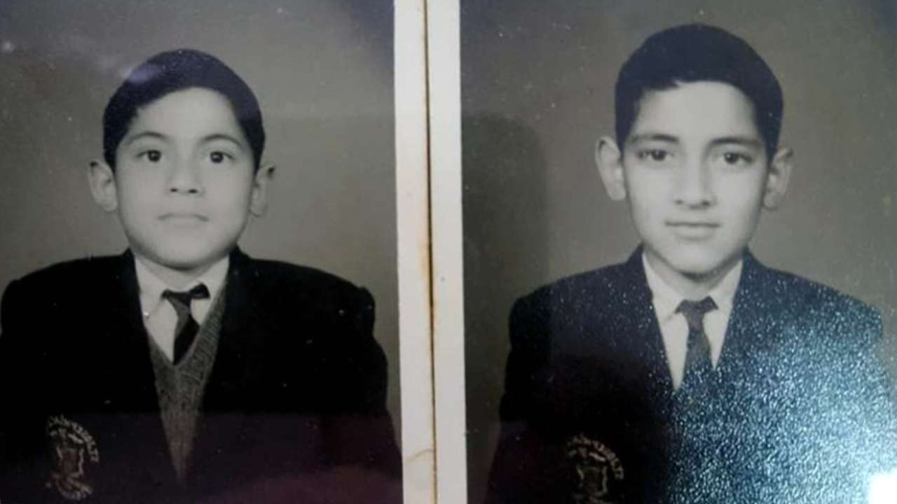

Early life and education
Bipin Rawat was born in Pauri town of Pauri Garhwal district, present-day Uttarakhand state,
on 16 March 1958. His family had been serving in the Indian Army for multiple generations.
His father Lakshman Singh Rawat (1930 to 2015) was from Sainj village of the Pauri Garhwal district;
commissioned into 11 Gorkha Rifles in 1951, he retired as Deputy Chief of the Army Staff in 1988 as a Lieutenant General.
His mother was from the Uttarkashi district and was the daughter of Kishan Singh Parmar,
the ex-Member of the Legislative Assembly (MLA) from Uttarkashi.
Rawat attended Cambrian Hall School in Dehradun and St. Edward's School in Shimla.
He then joined the National Defence Academy, Khadakwasla and the Indian Military Academy, Dehradun,
from where he graduated first in the order of merit and was awarded the 'Sword of Honour'.
Rawat was also a graduate of the Defence Services Staff College (DSSC),
Wellington and the Higher Command Course at the United States Army Command and General Staff College (USACGSC) at Fort Leavenworth,
Kansas in 1997. From his tenure at the DSSC, he obtained an MPhil degree in Defence Studies as well as diplomas in Management
and Computer Studies from the University of Madras. In 2011, he was awarded a honorary doctorate by Chaudhary Charan Singh University,
Meerut for his research on military-media strategic studies.